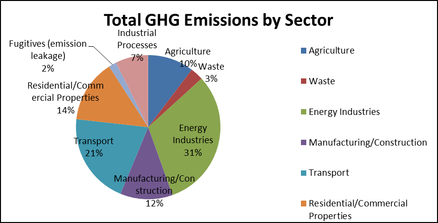
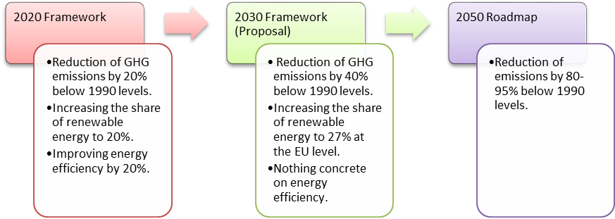

COMMITTEE ON ENVIRONMENT, PUBLIC HEALTH AND FOOD SAFETY I (ENVI I)
Empty rhetoric or making a real difference in the fight against Climate Change? With the EU’s 2030 and 2050 goals being criticised by environmental groups for a lack of ambition, what should the EU’s priorities for combating climate change be?
Vice-President: Irem Tümer - Turkey
Explanation and Relevancy of the Problem:
In the last few decades, the average global temperature has significantly risen as a result of the increased use of greenhouse gases in human activities. These temperatures are having, and will continue to have, significant consequences around the world. Abnormal weather conditions that are brought about as a result of climate change, such as rising sea levels, flooding and droughts, are having an increasing impact on economies and environment, as well as the health and daily lives of individuals.
The EU has always been at the forefront of the fight against climate change, and has often been praised for the ambitious regional policies it pioneers. Climate change is a top priority for the EU. The EU’s Heads of State or Government have endorsed the proposal to spend at least 20% of the 2014-20 European budget on climate-related measures. Climate change priorities are also mainstreamed into relevant European policies such as regional development, agriculture, fisheries and energy. All of these are shaped to take into account the goals of climate change mitigation and adaptation. In the aftermath of the economic crisis, the ‘green economy’ is a promising field for job creation, and it also strengthens the EU’s energy security and decreases dependency on imported oil and gas.
The European Commission proposed the EU’s policy framework for 2030 in January 2014. (For more on the content of the proposal, refer to the Measures in Place section.) There have been mixes views on the proposal. While Jose Manuel Barroso, the president of the European Commission, argued that ‘We have set ourselves ambitious and yet feasible and affordable targets.’; other MEPs did not agree with this statement. ‘ The modest 2030 targets are not in line with what the science tells use is needed to limit global warming to below 2 °C.’ said Rebecca Harms, for the Green Group in the European Parliament. The proposal has been vigorously criticised for the renewable energy target it sets, and the absence of an energy efficiency target has also been pinpointed. The package must still be approved by the European Parliament and by Member States governments. EU leaders agreed in March 2014 to decide on the framework in October 2014 at the latest.
With the negotiations on a new international agreement on climate change scheduled to take place in early 2015, the formation of the EU climate change policy for the short and long-term is of utmost importance. The exact nature of the 2030 and 2050 goals will be the main indicators of the EU’s continued commitment to tackling climate change.
Links:
· To read more on climate change and EU’s policies on tackling climate change, refer to http://europa.eu/pol/pdf/flipbook/en/climate_action_en.pdf
· The climate action section of Europa portal also gives an excellent overview of different sub-topics and relevant policies: http://ec.europa.eu/clima/policies/brief/eu/index_en.htm
· For a comprehensive compilation of public reactions to the 2030 policy, check out http://treealerts.org/region/europe/2014/01/round-up-eu-told-to-strengthen-2030-package-amidst-wave-of-criticism/
Key Terms:
Links:
· For a comprehensive glossary of terms related to climate change refer to: http://www.bbc.com/news/science-environment-11833685 or http://www.epa.gov/climatechange/glossary.html#B
· To read more on mitigation measures and the terms used to refer to them: http://www.bbc.com/news/science-environment-26980837
Key Questions:
· Building on the experience gained from the implementation of the 2020 framework, what are the most important concerns when designing policies for 2030 and 2050?
· What should be the type, nature and level of targets and how should they interact? Should the targets be at EU, national or sectoral level and be legally binding?
· Have there been incoherencies between the targets or measures in the existing framework, if so, how can the coherence of further targets be ensured?
· Which elements of the climate change policy should be highlighted to better promote job creation, growth and competitiveness?
· How can the climate change policy encourage cooperation and fair effort sharing between Member States while ensuring cost- effective delivery of set objectives?
Links:
For further discussion points, please refer to the Green Paper that was published by the European Commission on 27.3.2013 which can be reached at http://eur-lex.europa.eu/legal-content/EN/TXT/PDF/?uri=CELEX:52013DC0169&from=EN
Key Facts and Figures:
· The atmospheric concentration of carbon dioxide, the most important greenhouse gas, is now at its highest level for at least 800.000 years. The first 11 years of the 21st century were among the 13 warmest since recording began in 1880.
· The average temperature has risen by almost 0.8 °C since 1850 globally but Europe’s land area has warmed more, by 1.3 °C.
· Scientific evidence indicates that irreversible and catastrophic changes in the global environment could occur if average warming exceeds 2°C above the temperature in pre-industrial times (or around 1.2 °C above today’s level.)
· Preventing global warming from exceeding the 2°C threshold is technologically and economically possible. The cost of taking action is estimated at 1% of global GDP whereas failing to act could have a price of 5% to 20% of global GDP.
· The EU has successfully reduced its greenhouse gas emissions by over 18% since 1990. In doing so, it has proven that economic growth and decrease in emissions are not necessarily mutually exclusive scenarios, as the EU’s economy has grown by more than 40% over the same period.
· The renewable energy industry in Europe has increased its work from 230 000 to 550 000 between 2008 and 2013. Meeting the 2020 target of obtaining 20% of EU’s energy from renewables could create an extra 410,000 jobs across the EU in related sectors.
· The EU is responsible for 11% of world greenhouse gas emissions. More than 80% of European emissions come from the production and use of energy, including transport.
· The graph below shows the sectoral distribution of greenhouse gas emissions in 27 EU Member States as of 2011:
(Data has been taken from the European Commission Fact Sheet on Climate Change)
Links:
Some facts on climate change in general are presented in http://climate.nasa.gov/evidence
For more facts that are specific to Europe, refer to http://ec.europa.eu/clima/publications/docs/factsheet_climate_change_en.pdf
Key Conflicts:
EU’s policy on climate change on one hand should be sufficiently ambitious to ensure that the EU is on track to meet longer-term climate objectives. On the other hand, it should also be realistic, taking into account the consequences of the economic crisis, in particular budgetary problems faced by Member States and businesses. Affordability of energy has been a common concern for households, and businesses, especially because of competitiveness. According to the Green Paper on the 2030 Framework, the proposed policy ‘ must identify how best to maximise synergies and deal with trade-offs between the objectives of competitiveness, security of energy supply and sustainability ’.
Another important conflict exists between different policy instruments. A balance should be struck between concrete implementing measures at EU level and measures that allow for flexibility at the Member State level. In order to balance all these concerns, the climate change framework adopted by the EU should set clear priorities and choose policies that are best tailored to achieve the identified goals. While ambitious targets do provide political momentum, some stakeholders argue that setting numerous targets is not necessarily coherent or cost- efficient. That is why the framework should make a sound choice on the types of targets, while recognising technological developments and promote research and innovation.
As Europe is struggling with the challenges set out by the economic crisis, ambitious climate-change related goals might seem unimportant. However, stepping up the transition to a environmentally- friendly, low-carbon economy potentially might help the EU overcome weak economic growth and unemployment.
Stakeholders:
The European Commission plays a central role in shaping and implementing the EU’s policies on climate change. Connie Hedegaard is the current commissioner who is in charge of the climate action portfolio. Functions of the Commission include:
- developing and implementing EU climate action policies and strategies,
- representing the EU in international climate negotiations together with the Presidency of the Council of the EU,
- implementing the ETS,
- monitoring the EU countries’ implementation of emission reduction targets in sectors outside the ETS,
- promoting the transition to a low-carbon economy based on clean technologies,
- managing the EU budget, 20% of which is allocated to support climate action.
The Directorate- General for Climate Action (DG CLIMA) , which was established in 2010, develops and implements international and domestic climate action policies and strategies. It is the main vehicle through which the adore-mentioned functions of the Commission are carried out.
The European Environment Agency (EEA) is an EU agency that is aimed at providing information on environment related issues. It acts as an information source for the general public, and is also beneficial for policy makers. Currently, the EEA has 33 member countries. of the European Union.
National governments also take specific national action on climate change. In relation with the European Climate Change Programme, each of the Member States have put in place domestic actions that build up on existing measures. Article 193 of the Treaty on the Functioning of the European Union (TFUE) sets the principle of minimum harmonisation of the EU environmental policy and legislation, which means that Member States can keep the EU goals or adopt more stringent measures as long as they respect the Treaty.
Links:
For the website of Commissioner Hedegaard, visit http://ec.europa.eu/commission_2010-2014/hedegaard/index_en.htm
More information on DG CLIMA can be found at http://ec.europa.eu/clima/about-us/mission/index_en.htm
Official website of the European Environment Agency can be found at http://www.eea.europa.eu/about-us
Existing Measures:
The European Union puts into place a series of policy measures to tackle climate change, and many of these are done through the European Climate Change Programme (ECCP) the first of which was launched in 2000. The ECCP II, which is ongoing today, consists of has several working groups and a set of specific actions that have been identified.
The EU Emissions Trading System (ETS) is the ‘cornerstone of the EU’s climate strategy’. It covers around 45% of emissions from over 12.000 installations in the power generating industry and other energy intensive sectors. The system works by putting a limit on overall emissions from high-emitting industry sectors, and letting the companies buy and sell emission allowances as needed.
The NER300 programme, which is financed from the proceeds from the sale of ETS allowances, is one of the world’s largest programmes to support the development of innovative low-carbon technologies.
The EU also has policies targeted at reducing emissions from flights and road transport. Other efforts include preventing deforestation and capturing industrial emissions. The EU has also launched a pan- European communication campaign that aims to raise awareness on climate change and the transition to a low-carbon economy.
EU’s legislative framework has been shaped by mandatory goals that have been put forward with certain deadlines. Let’s take a closer look at the 2020, 2030 and 2050 goals set by the EU:
The 2020 Strategy has been the first regionally binding legislation setting targets that must be achieved. The 2020 Strategy (also known as 20-20-20) sets three goals for the EU to reach until 2020:
- EU greenhouse emissions are to be cut by 20% below 1990 levels.
o This is, on one hand, being achieved through the ETS.
o For the sectors that are not covered by the ETS, (this amounts to around 55% of total emissions), Member States have agreed to the Effort Sharing Decision (ESD) that sets national binding targets.
- 20% of EU’s energy is to come from renewables.
- Energy efficiency is to be improved by 20%.
As a part of this strategy, the first two targets were implemented through a ‘climate action and energy package’ that became binding law in June 2009. The legislation sets compulsory national targets on emissions and renewable energy for all Member States. Legislation setting non-binding national targets for improving energy efficiency was adopted in 2012.
The 2030 policy framework, which has been proposed by the European Commission in January 2014, is to be finalised until October 2014.
Below are the main targets that are to be achieved by 2030 according to the proposed policy:
- EU greenhouse gas emissions are to be cut by 40% below the 1990 levels.
o The sectors covered by the ETS would have to reduce the emissions by 43% compared to 2005.
o Emissions from non- ETS sectors would need to be cut by 30% below the 2005 level.
- The share of renewable energies in EU’s energy consumption would be raised to 27%.
- The role of energy efficiency in the framework will be discussed in late 2014, as part of the review of the Energy Efficiency Directive.
In addition to this, the long-term perspective of the EU has been set by the 2050 Roadmap in 2011. Roadmap for moving to a competitive low carbon economy in 2050, reflects the EU’s target of reducing greenhouse gas emissions by 80-95% below 1990 levels. The Roadmap foresees sector- specific reduction targets to reach this target. To reach this goal, intermediate cuts by 25% by 2020, 40% by 2030 and 60% by 2040 would be needed.
Links:
For more information on the ECCP, visit http://ec.europa.eu/clima/policies/eccp/index_en.htm
For a simple and well-written overview of the ETS please refer to http://ec.europa.eu/clima/publications/docs/factsheet_ets_en.pdf
More information on the 2020 Framework can be found at http://ec.europa.eu/clima/policies/package/index_en.htm
More information on the 2030 Framework can be found at http://ec.europa.eu/energy/2030_en.htm and http://ec.europa.eu/clima/policies/2030/index_en.htm
More information on the 2050 Roadmap can be found at http://ec.europa.eu/clima/policies/roadmap/index_en.htm
Legal Framework:
EU’s competence on environmental issues is a shared competence. This means that both the EU and the Member States would have the power to legislate on the issue; however, Member States would exercise this power to the extent that the Union has not exercised its competence.
The Articles 191 to 193 of the TFUE are environmental provisions, setting out the objectives that are to be achieved by the EU. With the Lisbon Treaty, a specific reference to climate change has been added to the definition of policy’s objectives.
Regarding the decision-making procedures, the ordinary legislative procedure is the main rule for the adoption of environmental legislation, including the adoption of the legally binding acts setting out the priority objectives of the EU environmental policy.
The Lisbon Treaty significantly modifies the enforcement procedure of legally binding acts. The EU’s capacity to impose sanctions in an area of Union policy is also recognised. This means that a Directive that establishes minimum rules for the definition of sanction on environmental issues can be created.
Links:
This article provides a comprehensive review of the impacts of the Lisbon Treaty on environmental law in the EU, please refer to the relevant sections of the article for in-depth explanations: http://www.clientearth.org/reports/clientearth-briefing-lisbon-treaty-march-2010.pdf